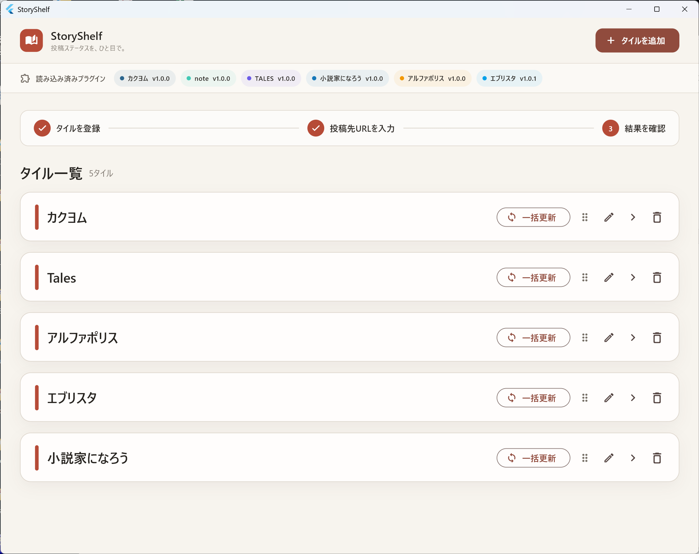
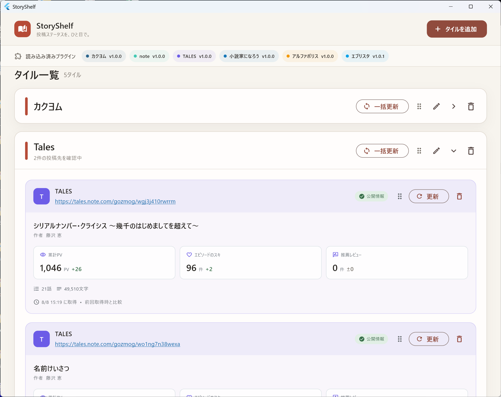

ダウンロードしたWindows版ZIPを、任意のフォルダーへ展開します。
Windows app · Beta
自作品の反応を、
ひとつの本棚に。
複数の小説・記事投稿サービスで公開している自作品の反応を、タイル形式でまとめて確認できるWindowsアプリです。
Windows版をダウンロードStoryShelf v0.9.1 · Windows x64最新版を確認しています…
迷いやすい点： GitHubの「Source code (zip)」はアプリ本体ではありません。このページのボタンからWindows版ZIPをダウンロードしてください。

ダウンロードしたら、すぐ使えます
インストーラーは不要です。
DLLやdataフォルダーを移動せず、そのままの構成で起動してください。
タイルを作成し、公開中の作品URLを追加すると反応を確認できます。
サービスごとの反応を、見やすく
ログインやパスワードを使わず、一般公開されている情報だけを取得します。
- カクヨム
- note
- Tales
- 小説家になろう
- アルファポリス
- エブリスタ
